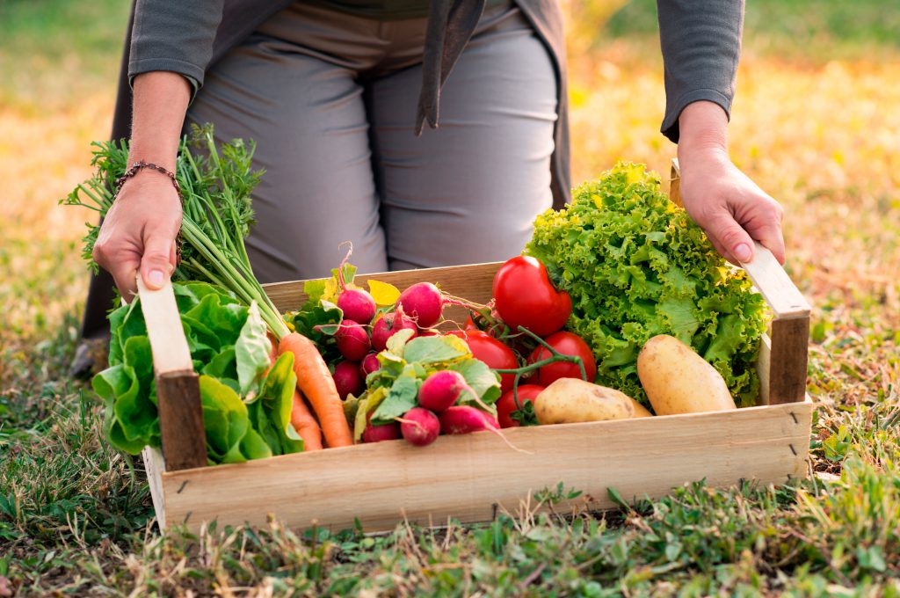
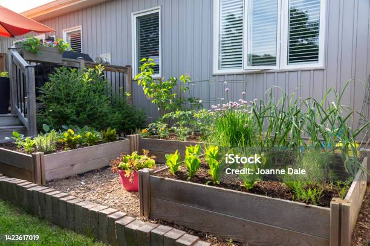
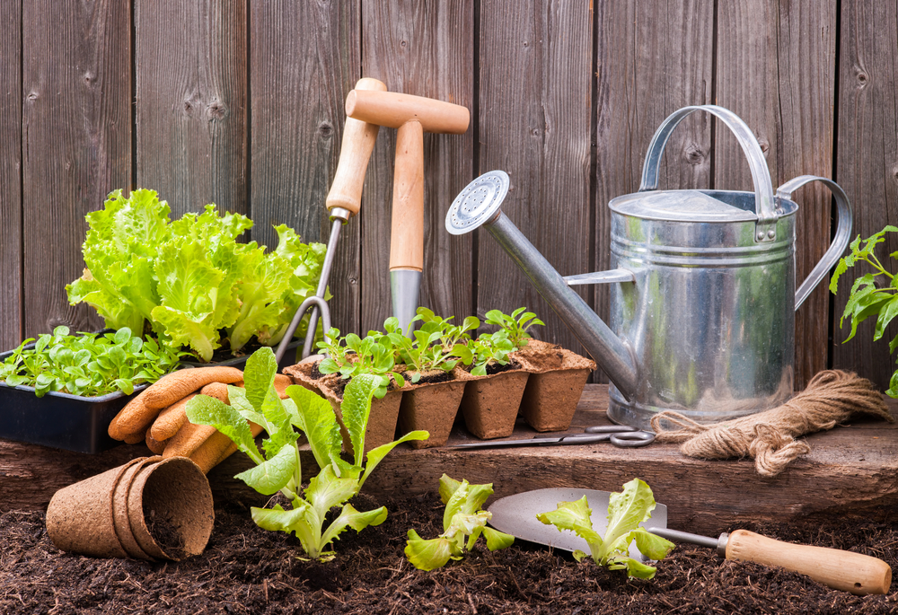

Creando codigo
HUERTOS EN CASA
"Pequeñas semillas, crean grandes huertos"

Beneficios
Tener un huerto en casa podría ser el primer gran paso para cambiar tu estilo de vida hacia uno más
sano,
responsable y ecológico. De hecho, los huertos en casa tienen múltiples beneficios:
Lograr una dieta saludable y a mejor precio;
Mayor entendimiento sobre los procesos de la naturaleza;
Tener alimentos durante todo el año;
Conocer el proceso de cultivo y la calidad de lo que comes;
Contar con la posibilidad de mejorar los ingresos;
Contar con tu propio huerto en casa es una forma sencilla y eficaz de reducir nuestro impacto en el
medio
ambiente mientras fortalecemos los tejidos de la comunidad local en la que vivimos.

¿Que huerto se adapta a mi espacio?
Lo importante es iniciar, aunque sea en un espacio pequeño, puedes recurrir a distintas técnicas, en
función
del
espacio del que dispongas, puedes montar dos tipos de huerto:
Horizontal: con macetas colocadas una al lado de otra, como si se tratara de plantas ornamentales o
flores.
Vertical: en distintos pisos. Esta modalidad de huerto, además de ahorrar espacio, te permitirá
trabajar con
mayor comodidad.
Todo es cuestión de disposición y de tener en cuenta algunos puntos básicos pasos para que el
proyecto se
haga
realidad.

¿Que necesito para iniciar mi huerto?
CADA UNA DE ESTAS RECOMENDACIONES ES IMPORTANTE PARA EMPEZAR CON NUESTRO HUERTO.
LUZ SOLAR.
Puede parecer obvio pero la luz es indiscutiblemente el factor más importante en el crecimiento de
las
plantas.
Y por tanto, un aspecto clave a la hora de escoger la ubicación para empezar un huerto en casa. Para
la
mayor
parte de los cultivos la regla “cuanta más luz mejor” se aplica.
Estudia la orientación: En el hemisferio norte, las orientaciones S, SE y SW son las más luminosas,
siendo
la
orientación norte la que menos luz recibe. Si vas a hacer un huerto en terrazas y balcones,
comprueba cual
es su
orientación para hacerte una idea de cuanta luz recibe.
Si vas a ubicar tu huerto en interior, debes tener en cuenta que los cristales filtran una buena
cantidad de
luz
solar. Con lo que en el caso de cultivar hortalizas y verduras en el interior de casa, debemos
compensar esa
peor calidad con más horas. Lo ideal es colocar tu huerto de interior en una ventana orientada al
sur.
Huertos de Interior
De 4 a 5 horas de sol
Aromaticas
Romero
Tomillo
Albahaca
Cebollino
Stevia
Perejil
Cilantro
Hojas de ensalada
Lechugas varias
Acelgas
Espinacas
Rucula
Hortalizas de raiz
Zanahoria
Rabano
Remolacha
Ajos y Cebollas
Mas de 6 horas
Hortalizas de fruto
Pimientos
Tomates
Berenjenas
Judias
Pepino
Elegir el recipiente ideal.
Escoger el mejor recipiente depende de varios factores. No existe un “recipiente ideal”, sino que
deberás
observar y definir el que mejor se adapte a tu situación.
Elegir entre macetas, jardineras, mesas de cultivo o jardines verticales dependerá de estos
factores:
El espacio con el que cuentes.
La inversión que quieras realizar.
Se pueden agrupar todos los recipientes para cultivar en huertos urbanos en estas 4 categorías:
MESA DE CULTIVO
Sus ventajas principales son:
Mayor espacio de cultivo
Mayor comodidad. Al estar elevadas son ideales para personas mayores y para personas con
discapacidad
motora.
Facilitan la tarea del riego.
Inconvenientes:
Requieren una inversión más elevada.
¿Qué tamaño de mesa de cultivo es mejor?
El tamaño dependerá exclusivamente del espacio que dispongas. La única norma en este aspecto es que
tengan al
menos 25 cm de profundidad. El resto depende de tus gustos y tu espacio.
No pienses siempre en comprar la más grande, hay veces que dos mesas pequeñas resultan más fáciles
de
encajar en
el espacio, como en balcones y terrazas alargados, donde en lugar de escoger una mesa de cultivo
grande, es
más
práctico optar por colocar varias mesas pequeñas en fila para crear un espacio alargado de cultivo a
lo
largo de
la pared de una terraza.
JARDINERAS Y
MACETAS
Sus ventajas principales son:
Son muy flexibles en cuanto a espacio, simplemente aumentando el número de macetas puedes
multiplicar el
tamaño de tu huerto. Lo que te permite también ir aumentando conforme vayas cogiendo experiencia.
Requieren poca inversión. Una maceta de buena calidad, lo que te
permite empezar un huerto sin necesidad de invertir mucho dinero.
Inconvenientes:
Automatizar el riego resulta algo más complicado que con las mesas de cultivo.
¿Que debes tener en cuenta al elegir una maceta?
Drenaje
Una maceta tiene que poder expulsar el exceso de agua (ya sea porque nos hemos pasado regando o
porque
ha
llovido mucho). Por eso necesita siempre agujeros de drenaje en la base. En interior puedes
añadir
una
bandeja para proteger el suelo.
Tamaño
Resulta fácil equivocarse con el tamaño de la maceta. Por eso quiero profundizar en este aspecto
y
tengas mas claro cual es el adecuado.
En la siguiente sección he agrupado los cultivos más habituales y
fáciles
para empezar según el tamaño de maceta que necesitan.
Los tamaños de macetas y jardineras más utilizados en el huerto son:
MACETAS 16 L
Pimientos
Judías
Tomates
Berenjenas
Guisantes
JARDINERAS O MACETAS BAJAS DE 12-15 LITROS
Aromáticas
Lechugas
Espinacas
MACETAS 2,5 – 3,5 L
Aromáticas
Fresas
JARDINES
VERTICALES
Aprovechas el espacio al máximo, te permite disfrutar de un huerto aunque no tengas un rincón para
ello, sólo
hace falta una pared. Son muy estéticos.
Inconvenientes:
Inversión inicial mayor.
No se puede plantar de todo, el tamaño para cada planta es de unos 3 – 4 litros, es perfecto para
aromáticas,
lechugas, espinacas, cultivos de raíz y fresas. Pero no para tomates o pimientos.
Escoger el sustrato.
Una vez escogido el recipiente, deberemos rellenarlo de sustrato, este es un tipo de tierra
específico para
macetas u otros recipientes ¿por qué debe ser específico? Muy fácil, cuando las plantas crecen en el
suelo,
las
raíces pueden expandirse buscando zonas done haya mayor disponibilidad de agua o de nutrientes, en
un
recipiente
no. Por eso, es importante buscar un sustrato específico para macetas, que retenga bien el agua y
sea rico
en
nutrientes. También es importante que sea ligero y poroso (las raíces también necesitan el aire que
hay en
los
poros de la tierra).
TIPOS DE SUSTRATO PARA EL HUERTO
SUSTRATO UNIVERSAL
Un buen sustrato universal va muy bien para macetas y jardineras. Asegúrate de conocer la marca,
comprarlo
en una tienda especializada o que garantice en el envase que es apto para el huerto urbano.
EL MEJOR SUSTRATO PARA EL HUERTO URBANO
Esta receta es la combinación de diferentes sustratos que crea una mezcla única y muy buena para el
huerto.
La mezcla de estos dos sustratos de propiedades tan diferentes, crea el sustrato perfecto para el
huerto
urbano. La relación ideal es de 60% fibra de coco, 40% humus de lombriz.
Fibra de coco:
Es un sustrato muy ligero y esponjoso, hecho con la corteza del coco. Esto hace que actúe
como una esponja, aportando aire y reteniendo agua.
Humus de lombriz:
Es un sustrato orgánico digerido por lombrices, que es muy rico en nutrientes, tanto,
que
puede usarse como abono cada cambio de temporada, incorporándolo al suelo para aportar un extra
de
nutrientes.
Escoger las semillas y las plantas. ¿Con cual empezar?
Un huerto urbano puede albergar casi todo tipo de cultivos de hoja y hortalizas. Pero sí que es
cierto que
hay
algunos que se adaptan mejor a la vida en recipientes que otros. Aquí tienes un buen listado de
cultivos que
puedes plantar en macetas, jardineras y mesas de cultivo:
Tomate
Pimiento
Berenjena
Lechugas
Espinacas
Acelgas
Rúcula
Pepino
Rabano
Remolacha
Albahaca
Cilantro
Cebollino
Romero
Salvia
Fresas
Cebollas
Ajos
Perejil
Cítricos
Calabacín
Generalmente es más fácil comprar la planta y colocarla (trasplantar) en su lugar definitivo, pero
decir que
vale la pena hacerlo con todas las plantas tampoco sería cierto, hay semillas que crecen solas
prácticamente, con lo que resulta un derroche comprar el plantel.
Si estás empezando, es mejor que empieces con plantel aquellos cultivos que requieren una siembra en
semillero. La siembra en semillero es aquella que se hace en macetas pequeñas, bajo un invernadero,
antes de
pasarlas al exterior y a su lugar definitivo.
EMPIEZA CON PLANTEL
Aunque lo que te he comentado no es un proceso complicado, puede abrumar un poco si no lo has
hecho
nunca.
Por
eso, si eres principiante, te recomiendo empezar con plantel estas hortalizas y verduras:
Tomates / Pimientos / Fresas / Berenjenas
EMPIEZA CON SEMILLAS
Hay semillas que no requieren este tratamiento previo y que permiten ponerlas directamente en su
lugar
definitivo, son cultivos fáciles de germinar y rápidos. Estos son:
Judías / Guisantes / Lechugas / Rúcula / Espinacas / Albahaca / Cebollino / Cilantro / Rábanos /
Remolachas
¿Que herramientas necesito para el huerto?
No necesitas comprar grandes utensilios para formar un huerto en casa. De hecho, lo más recomendable
es
comprar
lo menos posible y usar materiales reciclados o que ya tenemos en casa o en la comunidad. Por
ejemplo, un
huerto
urbano puede hacerse en un huacal de pan o fruta, cajones viejos, botellas de plástico o en una
llanta
ponchada,
sólo necesitas adecuarlos a los cultivos.
Lo mas escensial seria:
Pala pequeña
Guantes
Regadera o manguera
Cestas o sacos
Tijeras de poda
¿Cómo regar mi huerto?
El riego es una de las mayores preocupaciones de los agricultores que están empezando, ya que es de
las cosas
que
necesitan de más observación. La mayor parte de hortalizas y verduras requieren una considerable
disponibilidad
de agua para desarrollarse, pero un exceso puede ser también catastrófico. Cada situación es
diferente, y
deberás experimentar y observar tu huerto para comprobar cuál es la frecuencia y cantidad de riego
ideal.
Manual
La regadera o manguera sigue siendo una buena solución para huertos pequeños. Lo ideal es regar
muy poco
a poco,
para que el agua se infiltre bien por toda la tierra. Al hacerlo muy de golpe, se generan
grietas que
hacen que
el agua fluya rápido y no de tiempo a las raíces a absorberla.
Exudación o goteo con programador
Si tienes una mesa de cultivo, o un número de macetas considerables (unas 7-8) es necesario
recurrir a
un sistema algo más complejo, te dará mayor autonomía y podrás regular la frecuencia y la
intensidad del
riego de forma automática.
¿Como abonar el huerto?
A partir de las 8 semanas del trasplante, las plantas ya habrán consumido gran parte de los
nutrientes
contenidos en el sustrato, y es hora de que vayamos reponiéndolos. Hay muchos abonos ecológicos muy
efectivos,
que además se adaptan a las diferentes necesidades de tus plantas. Puedes utilizar dos tipos de
abonos
ecologicos:
SÓLIDOS
El compost o el humus de lombriz sólido son resultado de la descomposición aeróbica de la materia
orgánica.
Se
pueden hacer fácilmente en casa y se aplican sobre la superficie del huerto. El agua de riego y de
lluvia se
encargará de que se vaya infiltrando en el sustrato y reponiendo los nutrientes de este.
LÍQUIDOS
En el mercado existen infinidad de abonos ecológicos en formato líquido. Estos en general son de
absorción
más
rápida y se aplican diluidos en el agua de riego.
Aprende a tratar las plagas de tu huerto.
Revisa tu huerto frecuentemente
Explorar tu huerto y observar el estado de tus cultivos te ayudará a encontrar problemas y a
solucionarlos a
tiempo. A la hora de combatir plagas del huerto, el factor tiempo es muy importante.
Ten preparado un insecticida o fungicida ecológico multiusos:
Es cierto, hay veces que el asunto es grave y urgente, la situación reclama una actuación inmediata y
no
podemos
ponernos a mirar cual es el tratamiento más específico. Por eso, vale la pena tener un insecticida y
un
fungicida a mano que sirvan para varias cosas.
INSECTICIDA ECOLÓGICO: JABÓN POTÁSICO
El jabón potásico es el primer tratamiento al que debemos recurrir para tratar
cualquier problema relacionados con plagas, al ser un tratamiento que no resulta tóxico para las
personas,
mascotas y fauna auxiliar. Viene muy bien para aplicarlo en las primeras fases de la plaga.
FUNGICIDA ECOLÓGICO: COLA DE CABALLO
La cola de caballo es un fungicida ecológico muy famoso, uno de los más utilizados en la
agricultura
ecológica,
es uno de los reyes indiscutibles para tratar hongos en el huerto como el oídio, el mildiu, la
roya y la
antracnosis.
Ahora ya tienes estas recomendaciones, que esperamos te sean de utilidad para iniciar tu propio huerto, si bien
es una actividad a la que debemos invertir tiempo, sabemos que si le damos continuidad podemos obtener muy buenos
resultados. Esperamos que disfrutes de tu huerto en casa.